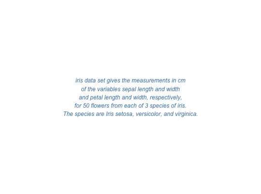

Create easily a customized text grob (graphical object). Wrapper around
textGrob.
text_grob(label, just = "centre", hjust = NULL, vjust = NULL, rot = 0, color = "black", face = "plain", size = NULL, lineheight = NULL, family = NULL, ...)
as.graphicsAnnot."left",
"right", "centre", "center", "bottom",
and "top". For numeric values, 0 means left alignment
and 1 means right alignment.
just setting.just setting."plain", "bold",
"italic", "bold.italic".a text grob.
text <- paste("iris data set gives the measurements in cm", "of the variables sepal length and width", "and petal length and width, respectively,", "for 50 flowers from each of 3 species of iris.", "The species are Iris setosa, versicolor, and virginica.", sep = "\n") # Create a text grob tgrob <- text_grob(text, face = "italic", color = "steelblue") # Draw the text as_ggplot(tgrob)